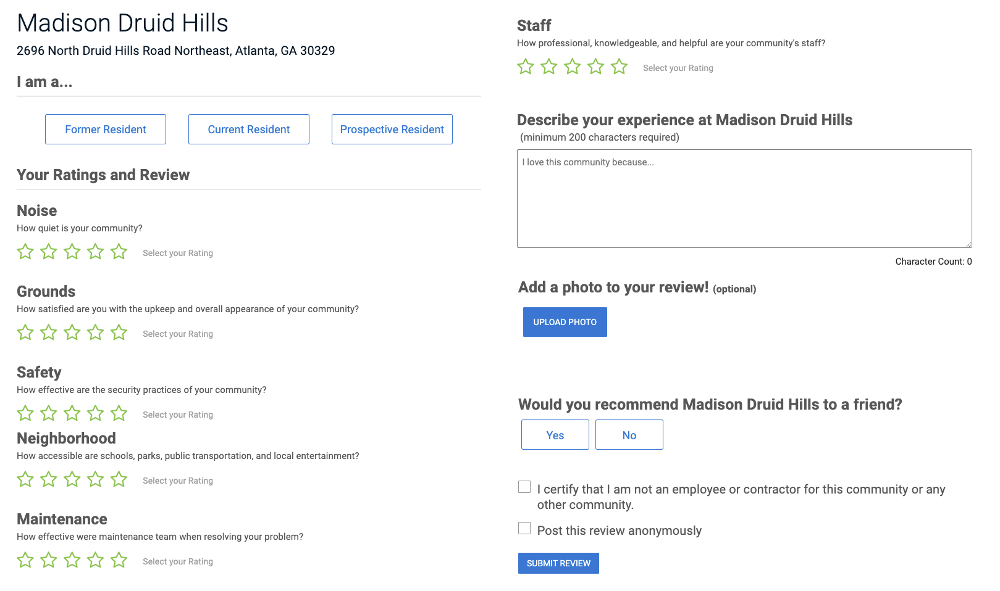
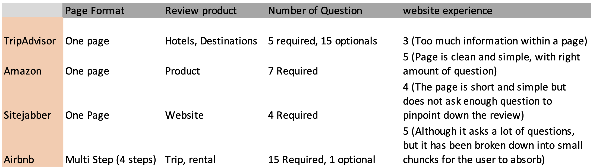

Single-page form
- Fewer clicks and all answers visible for editing.
- A long form can feel overwhelming.
- Drop-off points can be harder to identify.
Internet Brands · Product management & UX research
I owned the product lifecycle and user research for the ApartmentRatings.com Write a Review redesign, from requirements and usability testing to experimentation and developer handoff.
Renter reviews are central to ApartmentRatings.com. The project paired a migration to React with an opportunity to improve the review-writing experience.

I reviewed competing form experiences to identify ways to keep the review process manageable:

The competitive review surfaced two approaches. I compared their tradeoffs using published discussions of single-page and multi-step checkout and form design.
I conducted 15 usability tests through UserTesting. Participants completed the existing single-page form and a high-fidelity multi-step prototype in Marvel, then answered follow-up questions. Testing focused on mobile because it accounted for more than 65% of the site’s traffic.
This result did not establish a clear preference, so we moved to an A/B test to evaluate behavior at a larger scale.
We split traffic evenly between the existing single-page form and the multi-step redesign. After one month and approximately 10,000 recorded event actions, the multi-step version performed better on the tracked measures.
These were the results reported for this experiment. The A/B test gave the team a stronger basis for launching the multi-step design than the small preference test alone.
I created the high-fidelity mockups and prepared the design for developer handoff. The walkthrough below shows the multi-step review experience.
View the Marvel prototypeThe experiment supported our hypothesis that breaking the form into steps could improve the review-writing experience. The results informed the decision to move the redesign into production.